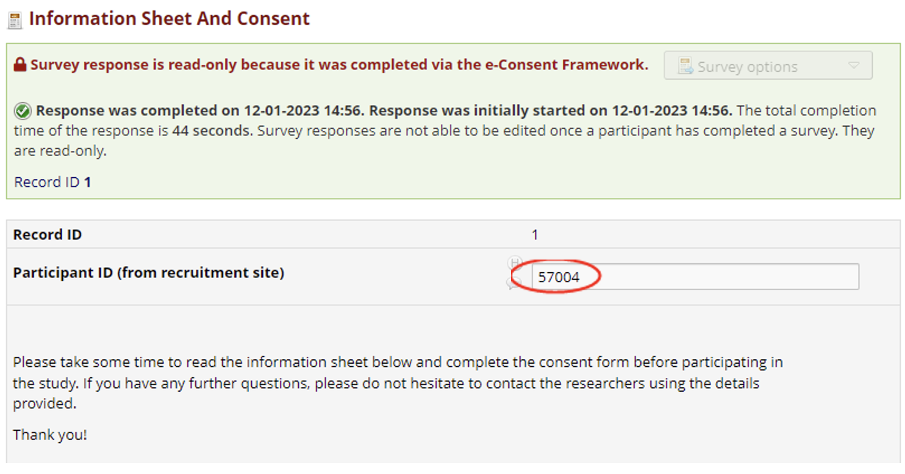
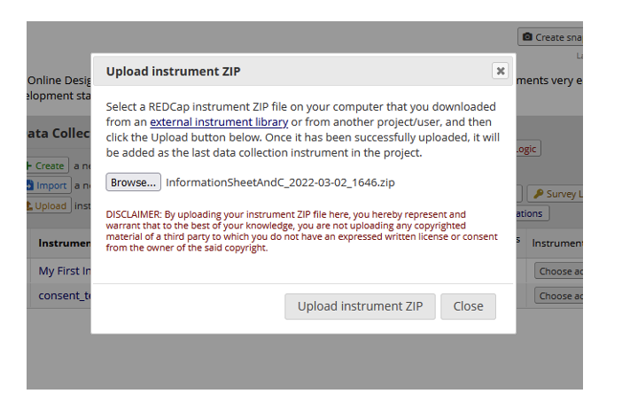
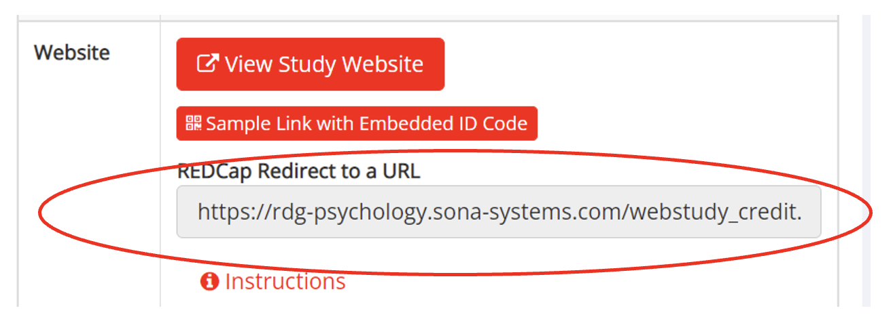

Setting up a pipeline for secure storage of personal information plus an anonymous online experiment
1 Why am I being asked to do this?
The University (DTS, IMPS, UREC) are concerned about the security of apps and online platforms, especially where they may store sensitive data. In PCLS, staff would like to use new apps and online platforms. It would be a bona fide nightmare to try and get each of these approved by DAS (the vetting committee for new software); often this takes years. A better solution is to ensure that personal information is stored on REDCap and then an anonymous ID is passed out to the online platform (eg Gorilla), the data is collected in the online platform and then information is passed back to REDCap and/or the program that pays/credits the participant. Anyway, that is why we are introducing this system: the alternative could be much worse. This guide is designed to help you set up online experiments in this way.
We start with the following paradigm as an example. At the end, we will describe variations on this theme (eg using a different platform other than Gorilla).
2 Things you need before you build the pipeline
You will need a SONA account. Details are in 10.1 Background on SONA.
You will need a REDCap account. Details are in 10.3 Background on REDCap.
You will need a Gorilla account (assuming you are setting up the pipeline above, which will run an experiment on Gorilla). Details are in 10.6 Setting up a Gorilla account and experiment.
Some of the above steps take a while, so leave some time. For example, requesting a REDCap account can take several days to get approval. Also, ethical approval is needed before you can collect data via SONA and REDCap.
Once you have these things in place, we suggest running through the below process in one sitting if possible. The entire process will likely take several hours.
N.B. Please note, this guidance document contains a number of example URLs/weblinks. These are all provided as examples, and should not be used within your own project as they will not work.
3 Making a new REDCap project and adding an Information Sheet and Consent form
This is the main rationale for the pipeline, i.e. to ensure that personal information including the Consent Forms are kept securely on REDCap.
Details of setting up a new REDCap project are in 10.4 Requesting and setting up a REDCap project
The key thing that you will need in your REDCap consent form, is a text field to store the participants’ SONA ID. This field must have the variable name ‘ppt_id’ for the instructions in this guidance to work. If you are downloading and using the Information Sheet and Consent form templates provided by us, this field is already included. If you are planning to build your own consent form on REDCap, you will need to add this field.
Full details about adding an Information Sheet and Consent form to your project (including a template you can download) are in 10.5.1 Editing the Information Sheet and Consent Form
If you would like to add more instruments, e.g. questionnaires here in REDCap, that is fine but is not part of this document (for details see the University’s webpages about REDCap, where you can find guidance on using REDCap, good practice guides and links to REDCap’s own training resources).
4 Passing participant ID from SONA to REDCap
This is done by finding the URL for your REDCap consent form and pasting it into SONA so that REDCap can receive a unique participant ID from SONA.
Go to your REDCap project and select ‘Survey distribution tools’ from the menu on the left - you will find your survey URL there listed as ‘Public Survey URL’. This URL takes participants to the first survey instrument in your project – in this case the information sheet and consent form.
Assuming that you have a SONA account (if not, see 2 Things you need before you build the pipeline above), log in and choose ‘Add a new study’:
Follow the instructions on this page (choosing the credited option of ‘external online study’ as the type of study):
On this page you will need to enter the basic information for your study. All of the information in the ‘basic study information’ section is required. Scroll down to the ‘Advanced Settings’ section until you find ‘Study URL’. This is where you will need to enter the URL that we found in REDCap (Figure 3Error! Reference source not found.).
Do not press the ‘Add this Study’ button until you have completed any necessary advanced settings, which includes the study URL to link with REDCap.
Paste the REDCap URL (see Figure 3 to find this) into this box in SONA . Then add the following onto the end of the URL:
&ppt_id=%SURVEY_CODE%
… so that it should look something like the example below:
https://uor-redcap.reading.ac.uk/surveys/?s=MT8EN3W4M39WPCMF&ppt_id=%SURVEY_CODE%
(Remember not to directly use our example links/URLs as they will not work, you need to use your own project’s URLs)
This will then ensure that when SONA passes the participant to the REDCap consent form, their SONA ID (their ‘survey code’) will then be carried over to, and saved in, a field called ‘ppt_id’ on your REDCap consent form.
If you are interested in the details of what the URL means, or how to recognise URLs from different platforms, see 10.7 Recognising URLS from SONA, Gorilla and REDCap.
5 Finding the right URL from Gorilla to allow REDCap to pass it a participant ID
When you 10.6 Setting up a Gorilla account and experiment it allows you to set up a recruitment policy which tells Gorilla where participants are coming from. Gorilla will then help correctly configure its study URL accordingly.
Within Gorilla, go to your projects and find the experiment you are working on. Along the top you should see a series of tabs including ‘design’, ‘recruitment’, ‘participants’ and ‘data’. You will need to select ‘recruitment’ and then ‘change recruitment policy’, and click on ‘Recruitment Service’ and select ‘Sona Systems’.
If your participants originally signed up through SONA, you should select SONA (even if they have been passed to REDCap before arriving at Gorilla). This is because you ultimately want participants to be awarded SONA credits on completion of the experiment on Gorilla, and gorilla needs to know that they were recruited through SONA to do this.

Now that Gorilla has generated a link that will take a participant to the Gorilla study, we can use this (or a slightly modified version of it) in REDCap to direct the participant to Gorilla after they have completed the last task in REDCap (see next section).
(NB do not use the generic URL that displays when you are viewing your survey/task (the one that will look something like this: https://app.gorilla.sc/task/6878668). This will not work.)
Instead, you want to use the link circled in Figure 9 but changed slightly (manually) before you paste it into REDCap:
(Remember not to directly use our example links/URLs as they will not work, you need to use your own project’s URLs)
You have to do this manually, e.g. in Word or Notepad, to change %SURVEY_CODE% to [ppt_id]. This is the link that we will need to paste into REDCap (see next section).
If you want to know more about why you do this and what the links are doing, read here.
6 Passing participant ID from REDCap to Gorilla
REDCap needs to know where to send the participant ID, I.e. a URL for Gorilla.
In REDCap in ‘Designer’ find the last survey in your REDCap project that participants will be completing, and go into its survey settings. In our example, we only have the ‘Information Sheet and Consent’ form so we will use this.
In the survey settings you will need to find the ‘Redirect to a URL’ setting under ‘Survey Termination Options’. This is will you will enter the URL that you have just edited.
Paste the edited Gorilla URL (the one that looks like our example: https://research.sc/participant/login/dynamic/3A3E0826-CF98-4846-AC1D-89E635E55B00?external_id=[ppt_id]) into the ‘redirect to a URL’ setting under ‘Survey Termination Options’. It is quite a long way down in the survey settings page, so keep scrolling down.
Remember, the link you paste in here is one that you have edited manually to have ‘[ppt_id]’ at the end:
This will now automatically redirect participants to your gorilla experiment upon completion of the REDCap consent form, carrying over their SONA ID.
Scroll down to the bottom of the ‘Survey Settings’ page and select ‘Save Changes’.
7 Passing participant from Gorilla back to SONA for automatic crediting
This involves passing a participant from Gorilla, upon completion of their survey/task, back to SONA to be credited for their participation.
SONA provides a completion link that you can add to the end of your gorilla survey/task that will send the participant back to SONA upon completion of the study and credits them for their participation. SONA has their own set of guidance on this which you can find here. Or you can use the instructions below.
You will find the completion link on your study information page on SONA under ‘REDCap Redirect to a URL’
The URL will look something like this example:
https://rdg-psychology.sona-systems.com/webstudy_credit.aspx?experiment_id=2532&credit_token=c4dbc01a4b5a4dd8ad3042e00683c855&survey_code=[sona_id:value]
(Remember not to directly use our example links/URLs as they will not work, you need to use your own project’s URLs)
However when using this URL with gorilla, you need to delete the URL parameter ‘&survey_code=[sona_id:value]’ as gorilla has built in functionality for passing the survey code back to SONA and so this is not needed:
https://rdg-psychology.sona-systems.com/webstudy_credit.aspx?experiment_id=2532&credit_token=c4dbc01a4b5a4dd8ad3042e00683c855
You then need to copy this link and add it as the onward URL at the end of your gorilla experiment (in your ‘finish node’).
Click ‘edit’ and then on the ‘finish node’ and paste the SONA completion URL (with the survey parameter removed as explained above) into ‘onward URL’:
This will then send participants back to SONA to be credited upon completion of their task. Participants will be taken to the SONA log in page and will receive the message ‘System Message: Web study credit successfully granted.’
Now you should be ready to test the whole pipeline (SONA > REDCap > Gorilla > REDCap > SONA).
8 Testing the pipeline without using up credits/tokens
If you want to test your that your pipeline works without using up credits and tokens, you can do this using features within both SONA and Gorilla.
Although you can test the project without using up tokens, you still need tokens available assigned to your gorilla project. This is because tokens need to be available in your project in order for it to be considered ‘live’ and for it to allow participants into it You can request a few tokens for the purpose of testing your project. You can find guidance on how to do this on Blackboard (log into blackboard first to make this link work), and on Gorilla’s own support pages. You should be able to request up to 4 gorilla tokens for the purposes of testing your pipeline without needing approval. If this does not work, simply state ‘for testing SONA > REDCap > Gorilla pipeline’ in your request and the administrators will approve it without needing further information.
Next, you will need to change your ‘finish node’ in Gorilla to a ‘reject node’. This means that when you test out the experiment, including the Gorilla task, instead of finishing and using a token it will allow you (the dummy participant) to finish the Gorilla task and Gorilla reject this participant’s data, and therefore not use up any tokens.
So, the instructions below may seem to go over old ground, but they show how to modify your pipeline to ‘practice’ it without using up tokens.
See Figure 14 for where to find the finish node. Click ‘edit’ and then click on the ‘finish node’ and then click ‘remove’.
Then select ‘add new node’ and select ‘reject’. Move the reject node to the end of the experiment and link it to the previous node.
Once again, you will need to add the SONA completion link (see Section 7 for where to find this) into the ‘onward URL’ section of the reject node, in the same way you did with the finish node previously.
Don’t forget when you have finished testing, you will need to change the reject node back to the finish node, adding the onward URL, before making your study live to participants.
N.B. If you do not remove the reject node before your study goes live with real participants, then gorilla will delete any data that comes through from those participants.
Using a test participant in SONA
You can now test the whole process from SONA using a test participant code. To do this you need to go to your study on SONA and select ‘sample link with embedded ID code’. You can find SONA’s own guidance on how to do this here, or see the instructions below.
This will then take you through each stage/platform of your study using a test participant code.
You can see below the test participant code ‘57004’ showing correctly in the URL for the REDCap consent form. This code would usually be the number that SONA assigns the participant when they sign up for the study. If your SONA study is not set up to be anonymous, this ID is the participant’s unique SONA identification number. If your SONA study is set up to be anonymous, this ID will be a random ID generated by SONA to track the participant. In this case, it is an example participant number that SONA has generated for the purpose of testing.
You can then do a test completion of your consent form, and can check that upon completion it correctly redirects you to gorilla carrying over the test participant code within the URL.
You can see below that once again the test participant code 57004 has correctly carried over to the start page on the Gorilla survey. Your test participant code may be different from our example of 57004.
One thing to note is that each time you test this pipeline, you will be passing Gorilla the same participant ID (e.g. 57004). Gorilla will not run the same experiment again for the same ppt_id. So, if you want to test it again including the Gorilla expt, you must delete the data stored for your dummy participant. Instructions on doing that are here. Or you could just not worry about it if you are not running the test again, as when you run the real expt, the ppt_id will be new and so it should run okay.
You can then do a test completion of the survey/task on Gorilla, and can check that upon completion it correctly redirects you back to SONA. If automatic crediting is set up correctly, you will see the message: “System Message: No credit given, because you are not a participant, and therefore cannot sign up for this study. Study Name: Test Study” (or whatever you called your study) .
You can also check that both the REDCap consent form and the Gorilla survey have recorded the correct test participant ID. This will ensure that you are able to link all your data upon completion i.e. you know which sign up related to which consent form and to which data.
Log into REDCap and open the project containing your consent form. Open the most recent record/data entry and check that the participant ID field has recorded the test participant ID correctly. To view your records, select ‘record status dashboard’ and go to the last record (if this is your first time testing it, it should be record ‘1’)
Click on the green tick next to the record to view the completed test information sheet and consent form. You should then be able to check that the participant ID has saved in the ppt_id field:

Next log into gorilla and go to the project containing your gorilla experiment and survey for this study. Go to the experiment, select the ‘participants’ tab and check that the ‘PublicID’ field has recorded the test participant ID correctly.
You are now ready for your experiment to go live. N.B. Make sure you change your gorilla ‘reject’ node back to a ‘finish’ node once you have completed testing, before you begin to collect real participant data. If you do not, any participant data you collect will be deleted by gorilla.
9 Alternative platforms (other than SONA and Gorilla)
9.1 Prolific academic
Please note, this tutorial assumes you will be using the Prolific consent form (note, this is not officially from Prolific and is instead created by Brendan Williams), available at Consent_2023-05-16_1509.zip, and that this form is the first survey available in your REDCap project. If you wish to edit this consent form then please feel free to do so, but do not edit the following hidden fields:
First you will need to log in to your researcher Prolific account. If you do not already have a workspace, then Prolific will ask you to make one. You can think of a workspace as being analogous to a lab group, where multiple projects can exist. Once you have created a workspace, click the button that will create a new project in Prolific for you. You can customise each project and select which (if any) collaborators should also be able to access the project. Within each project you can create individual studies, which can be thought of as a single instance of data collection. Projects have the added bonus that if your work contains multiple data collection instances with different set-ups, then you can use the same project to combine these different studies together. Projects also have separate budgets, so if you have multiple studies running at once then you don’t need to worry about overspending on one project and losing out on money to another project.
Once you have created your project and clicked on the new study button you will be presented with a form to set up your data collection. One of these sections will have the heading Data Collection, and will look like the example below.
The most straightforward way to direct people to your REDCap form from Prolific is to use URL parameters. By default, when you select this option Prolific will populate the URL field with an entry that looks similar to this:
This suffix will be added to your REDCap public survey URL from to pipe relevant information from Prolific to REDCap. However, there are several fields that will need to be changed here. For instance we do not need the question mark at the beginning of the URL suffix. Secondly, because REDCap variable names are case sensitive and can only be lowercase, the use of query strings will not work here without edits.
?PROLIFIC_PID={{%PROLIFIC_PID%}}&STUDY_ID={{%STUDY_ID%}}&SESSION_ID={{%SESSION_ID%}}
You can use the configure parameters option in Prolific to change PROLIFIC_PID, STUDY_ID, and SESSION_ID and have Prolific automatically update these fields in the auto-generated suffix.
Now, the suffix has been updated so it includes lower case versions of the query strings the only thing that needs to be removed is the question mark.
?prolific_pid={{%PROLIFIC_PID%}}&study_id={{%STUDY_ID%}}&session_id={{%SESSION_ID%}}
You are now ready to combine the suffix from Prolific with your REDCap survey. Go to the survey distribution tools section of your REDCap project, and generate a Public Survey URL if one does not already exist.
You can then need to combine the Public Survey URL from REDCap with the suffix that Prolific generated for you. To do this take the Public Survey URL, then add an ampersand (&) symbol, and finally, the suffix generated by Prolific. For example:
https://uor-redcap.reading.ac.uk/surveys/?s=ABCD1234&prolific_pid={{%PROLIFIC_PID%}}&study_id={{%STUDY_ID%}}&session_id={{%SESSION_ID%}}
Please note, this is only an example, and will not work unless your REDCap survey ID is ABCD1234. Otherwise, please make sure you copy the Public Survey URL as it appears in REDCap.
To test this works you can replace {{%PROLIFIC_PID%}} {{%STUDY_ID%}} and {{%SESSION_ID%}} with, for instance, 123 456 and 789. For example, your URL would be https://uor-redcap.reading.ac.uk/surveys/?s=ABCD1234&prolific_pid=123&study_id=456&session_id=789. Confirm your consent to “take part” in your study, and complete the consent form. Once this is completed, go to your REDCap dashboard, and click on the Data Exports, Reports and Stats tab, then click “View Report”.
If you successfully added these variables, then you should see a record with the values you assigned to each of the variables, see below for an example.
You can then use the variables prolific_pid study_id or session_id later on to pipe values to Gorilla or a similar additional service. Porting variables out of REDCap is explained elsewhere in this guide https://reading-psych.github.io/data-pipeline/#_Toc124430670 (please note, the variable names given here may be different, you will need to make sure they are consistent across platforms otherwise you may experience difficulties).
Lastly, you will need to eventually return your participants to Prolific, and give them a completion code. This can either be done using URL redirects, or by giving them a completion code manually. Select the option you’d like to use. You can also customise completion URLs and code based on conditional logic that you could include within your REDCap survey, such as attentional checks for careless/insufficient effort responding.
If you are including logic for attentional checks in REDCap using calculated fields, then you will need to use the @CALCTEXT action tag in REDCap to return a string value. In the below example @CALCTEXT and an “if” statement is used to check whether the participant passes both attention checks ([sticsa_attention]=1 and [ius_attention]=1) in the example. The completion code CZBGPC2L is returned if both attention checks are passed and CW98NED1 is returned otherwise. These will not necessarily be the completion codes you need to use for your Prolific study, and an example is given below to show how different completion codes can be created by Prolific. Note, it is important that the “Text Box” field type is used for your completion code variable and also that the @HIDDEN action tag is used so participants don’t see these fields.
Combining attention checks with different completion codes in Prolific can help streamline assessing which participants should be paid for their submissions, and which participants should be excluded and unpaid. In the below example a completion code can be used for participants who successfully pass all attention checks, and can therefore be paid automatically. A separate completion code is also used for participants who fail the attention checks. These participants are set to be manually reviewed, as this allows you to reject their submission and not pay them.
More than two completion codes can be used, and different codes can be created for different reasons including qualifying for a follow up study, failing attention checks, earning a bonus payment, using an incompatible device, not consenting. There is also a free text option of these descriptions do not fit your use case.
10 Extra detail (referred to in text above)
10.1 Background on SONA
SONA is an experiment management system which is used by PCLS Research Panel for recruiting participants from the PCLS student population. Undergraduate students sign up in their first year and must take part in studies on the system in order to earn credits. The credits they earn then contribute towards the credits they can award out when they set up their own studies in their final year. MSc students also follow a similar process but with a different credit requirement. Staff and PhD students can advertise their studies on SONA if they are interested in recruiting from the student population.
Credits can be awarded manually on SONA, by a researcher confirming participation, or the system can be set up to automatically credit participants upon completion of questionnaires/tasks. Studies can be set up on SONA so that the researcher can see who has signed up, or can be set up anonymously, with automatic crediting working for both situations.
You can find full guidance on SONA on blackboard and can also find the SONA user manual here.
10.2 Getting a SONA account and logging in
There are two types of SONA accounts: participant and researcher. In order to set up and advertise a study you must have a researcher SONA account. To get a SONA researcher account:
- Undergraduate and MSc students must first have signed up for a participant SONA account and have earned the required amount of credits for their course. See blackboard for full information on this. Once they have done this they can email psychpaneladmin@reading.ac.uk to request their account be changed to a researcher account.
- PhD students and staff can just email psychpaneladmin@reading.ac.uk and request a researcher account.
Please allow a 2 working day response time when requesting a researcher SONA account.
You can find full guidance on SONA on blackboard and can also find the SONA user manual here.
Psych panel admin will email you to confirm that your researcher account has been set up.
- For undergraduate and MSc students who had an existing SONA participant account that has been upgraded to a researcher account, you can just log in using your existing SONA account username and password.
- For staff and PhD students who do not already have a SONA account, you will receive an email from SONA containing your login details.
Once you have a researcher account and log in details you can log into SONA from http://rdg-psychology.sona-systems.com
10.3 Background on REDCap
REDCap (Research Electronic Data Capture) is a secure web-based application for building and managing online databases and surveys. It is suitable for use in participant-based research, such as clinical trials, observational studies, longitudinal studies, and survey-based projects. The University of Reading has its own incidence of REDCap, stored on a University of Reading server and hosted in accordance with institutional Information Compliance Policies. As such, it is the recommended platform for processing identifiable information.
The University has provided guidance on data management within REDCap. Find out about REDCap at the University of Reading here.
If you require further support with using REDCap, please email: uor-redcap@reading.ac.uk
Or, you can check out REDCap’s library of training videos here.
10.4 Requesting and setting up a REDCap project
Request your REDCap project be set up here. This process can take approx. 2 working days from submitting a request to approval. You will need to have ethics approval for any research project you want to set up on REDCap. You do not necessarily need to provide this information at the time of requesting your project, but you will need to provide confirmation of approval before starting data collection.
You will receive an email when your request for a new project has been granted, and a blank project will have been set up for you within REDCap.
Log in to your REDCap account here using your REDCap username and password. You will be presented with a list of your projects. Select your newly created project to start editing it. When you do so you will be taken to the setup page.
You can also set up a practice/test REDCap project which does not require going through the approvals process. You can do this by logging into REDCap and selecting ‘+ New Project’ on the projects page and choosing the ‘practice/just for fun’ from the ‘project’s purpose’ drop down menu. You cannot collect real research data in a practice project, but you can use it for testing this process before applying/whilst waiting for for your actual REDCap project.
10.5 Adding the information sheet and consent form to REDCap
From the ‘Project Setup’ page on REDCap you want to select ‘Online designer’ or ‘Designer’ to create a survey for your consent form:
This will take you to your list of instruments/surveys within this project
New projects will always have an instrument called ‘My First Instrument’, we can delete this once we’ve added our consent instrument.
You can find the template for an information and consent form instrument here. Download the whole file to your computer and select the Upload option in the ‘designer’ section on REDCap to add it to your REDCap project.
Alternatively you can design and create your own information sheet and consent form, but you will need to ensure you create a field for the participant’s SONA ID with the variable name ‘ppt_id’ and set this field to be hidden (by adding the Action tag @HIDDEN-SURVEY).

You should now be able to see ‘Information Sheet and Consent’ listed under your instruments:
You can now delete ‘My First Instrument’ by selecting ‘Choose action > Delete’.
If you already have other instruments set up in your REDCap project e.g. a survey, you will need to ensure that the ‘Information Sheet and Consent’ instrument is the first instrument in the list.
You can do this by clicking to the left of the Instrument name and dragging it into the position you require.
10.5.1 Editing the Information Sheet and Consent Form
To begin editing your Information sheet and Consent form, click on the instrument name and you should see the instrument as below:
Leave the Participant ID field alone. This is the field that receives info from the recruitment site (e.g. SONA), and passes it onto any subsequent site (e.g. Gorilla). This field/variable is called ‘ppt_id’.
N.B. If you are creating your own consent form and PIS on REDCap, this is field you will need to add for the SONA ID to be passed into. This should be a text field with the variable name ‘ppt_id’.
{alt=“Graphical user interface, text, application, email
Description automatically generated”}All of the fields in this instrument are editable.
• You can change them by selecting the ‘Edit’ button
• {alt=“Graphical user interface, text, application, email
Description automatically generated”}{alt=“Graphical user interface, text, application, email
Description automatically generated”}You can move them by selecting the ‘Move’ button
• You can delete them by selecting the ‘Delete’ button
You should edit the information sheet and consent form with the correct contact details and information (prompts are included), or the specific wording you have on your ethically approved information sheet/consent form.
You can see how the survey looks to a participant by going to the ‘Survey Distribution Tools’ page
10.6 Setting up a Gorilla account and experiment
You can find information on how to get a gorilla account, how to subscribe to the University subscription in order to access tokens, and how to set up your experiment here. You can also find step by step guidance on Gorilla’s support webpages.
Quick links for:
Accessing the UoR subscription (you will need to use the enrolment code: PCLS_2021)
10.7 Recognising URLS from SONA, Gorilla and REDCap
You are going to be using URLs from SONA, REDCap and Gorilla within this process. You will find further guidance below on how to find/adapt the correct URLs for each platform, however it might be useful to get to know what each platforms’ URLs might look like and how to tell them apart.
SONA URLs
The SONA URL you will be using should have ‘rdg-psychology’ and ‘sona-systems’ within it.
REDCap URLs
https://uor-redcap.reading.ac.uk/surveys/?s=NJJDHWCRH898JN38&ppt_id=%SURVEY_CODE%
The REDCap URL you will be using should have ‘uor-redcap’ within it.
Gorilla URLs
https://research.sc/participant/login/dynamic/3A3E0826-CF98-4846-AC1D-89E635E55B00?external_id=%SURVEY_CODE%
The Gorilla URL you will be using should have ‘research.sc’ within it. It will not necessarily have the word ‘gorilla’ in it.
10.8 Deleting test participant data from Gorilla
When you are testing the pipeline using a test participant ID from SONA, you may want to test the process more than once. As SONA will always provide the same test participant ID, you will need to delete any test data before running the process again, as gorilla will only accept one set of data per participant ID.
To do this, you need to navigate to your experiment in gorilla, and select the ‘participants’ tab.
You can see we have an entry from our test participant ID ‘57004’. Under the heading ‘actions’ select ‘delete’ and then confirm that you want to delete this participant from your experiment.
You can now run the test process again from the beginning.
10.9 External Study Credit Granting with REDCap (REDCap > SONA)
This section will outline how to connect REDCap directly back to SONA which you will need to do if you do not need to use gorilla or any other platform in addition to REDCap.
First you need to set up your REDCap project as outlined in the first section of this document, and then your study on SONA as outlined in the second and third sections.
10.9.1.1 Finding the SONA Completion URL/link
You will then need to find the SONA completion link for your study. This link sends participants back to SONA on completion of their REDCap surveys and automatically credits them for their participation.
You will find the completion link on your study information page on SONA under ‘REDCap Redirect to a URL’

The URL will look something like this:
https://rdg-psychology.sona-systems.com/webstudy_credit.aspx?experiment_id=2532&credit_token=c4dbc01a4b5a4dd8ad3042e00683c855&survey_code=[sona_id:value]
You now need to edit the URL so that SONA knows where to find the participant ID on REDCap. On our REDCap Consent form, the participant ID was stored in a field we created called ‘ppt_id’. So, we will replace the URL parameter ‘survey_code=[sona_id:value]’ with ‘survey_code=[ppt_id]’.
Your URL should then look something like this:
https://rdg-psychology.sona-systems.com/webstudy_credit.aspx?experiment_id=2532&credit_token=c4dbc01a4b5a4dd8ad3042e00683c855&survey_code=[ppt_id]
(Remember not to directly use our example links/URLs as they will not work, you need to use your own project’s URLs)
10.9.1.2 Entering the SONA completion URL/link into REDCap survey direction settings
In ‘Designer’ find the last survey in your REDCap project that participants will be completing, and go into its survey settings. In our example, we only have the ‘Information Sheet and Consent’ form so we will use this.
In the survey settings you will need to find the ‘direct to a URL’ setting under ‘Survey Termination Options’. This is will you will enter the URL that you have just edited.
Paste the edited SONA URL (the one that looks like our example: https://rdg-psychology.sona-systems.com/webstudy_credit.aspx?experiment_id=2532&credit_token=c4dbc01a4b5a4dd8ad3042e00683c855&survey_code=[ppt_id]) into the ‘redirect to a URL’ setting under ‘Survey Termination Options’ within the survey settings for the Information Sheet and Consent Form.
You can also find the latest instructions from SONA on integration with REDCap, along with detailed screenshots, go to https://www.sona-systems.com/help/redcap.aspx. The product may change more often than we update our documentation, so the help page will contain the very latest information.
11 Table of Figures
Figure 1 . Flow diagram showing participant moving from one platform to another. We will use this as the basic paradigm and then describe variations later.
Figure 2 . Flow diagram to show how URL parameters take information from one platform to the next.
Figure 3 . Finding the public survey URL for your consent form in REDCap
Figure 4 . Adding a new SONA study
Figure 5 . Setting up your study on SONA
Figure 6 . Where to paste REDCap URL in SONA
Figure 7 . Setting the recruitment policy in gorilla
Figure 8 . Changing recruitment policy in gorilla to SONA
Figure 9 . Finding correct URL for your gorilla experiment
Figure 10 . Finding the REDCap survey redirection settings
Figure 11 . Pasting the gorilla experiment URL into REDCap
Figure 12 . Ensuring gorilla URL has edited ‘[ppt_id]’ when pasting into REDCap
Figure 13 . Finding SONA redirect link for automatic crediting
Figure 14 . Finding the ‘finish’ node in gorilla
Figure 15 . Pasting SONA completion URL in gorilla ‘finish’ node
Figure 16 . Participant view of successful automatic SONA crediting upon study completion
Figure 17 . Removing the finish node in gorilla
Figure 18 . Adding a ‘reject’ node in gorilla
Figure 19 . Adding the SONA completion link as the onward URL in gorilla reject node for testing
Figure 20 . Finding SONA’s sample link for testing pipeline with dummy participant ID
Figure 21 . Testing that participant’s SONA ID has passed to REDCap consent form
Figure 22 . Testing gorilla experiment with test participant ID
Figure 23 . Successful testing of automatic SONA crediting
Figure 24 . Checking your test data entry on REDCap
Figure 25 . Checking test participant ID is correctly stored in REDCap
Figure 26 . Checking test participant ID has saved in gorilla
Figure 27 . REDCAP hidden fields that you should not edit
Figure 28 . Prolific Academic projects interface
Figure 29 . Prolific Academic data collection interface
Figure 30 . Prolific Academic interface for including the relevant parameters of your study in your URL
Figure 31 . Prolific Academic parameters editor
Figure 32 . Example of how your URL will change if you change the parameters
Figure 33 . REDCAP – Survey distribution tools is where you can find the URL for your survey
Figure 34 . REDCAP – interface that allows you to view your data
Figure 35 . REDCAP – example of a data report
Figure 36 . Prolific – participants are either redirected or given a completion code to submit to confirm completion
Figure 37 . REDCAP – interface to add/edit fields, such as for including completion codes
Figure 38 . Prolific – settings to address how participants are paid in response to their completion
Figure 39 . Figure 39 - Finding the online designer in REDCap
Figure 40 . Adding template PIS and consent form to REDCap
Figure 41 . Uploading zip file containing template REDCap PIS and consent form
Figure 42 . Instrument view in REDCap viewing new PIS and consent form
Figure 43 . Ensuring PIS and consent form is first REDCap instrument
Figure 44 . Viewing new PIS and consent form on REDCap
Figure 45 . Deleting test participant data from gorilla
Figure 46 . Deleting participant test data from gorilla - confirming deletion
Figure 47 . Diagram to show participant flow from SONA > REDCap > SONA
Figure 48 . Finding SONA completion link to paste into REDCap
Figure 49 . Finding REDCap survey redirection setting to enter SONA completion link
Figure 50 . Entering SONA completion link into REDCap survey termination settings to send participant back to SONA for automatic crediting